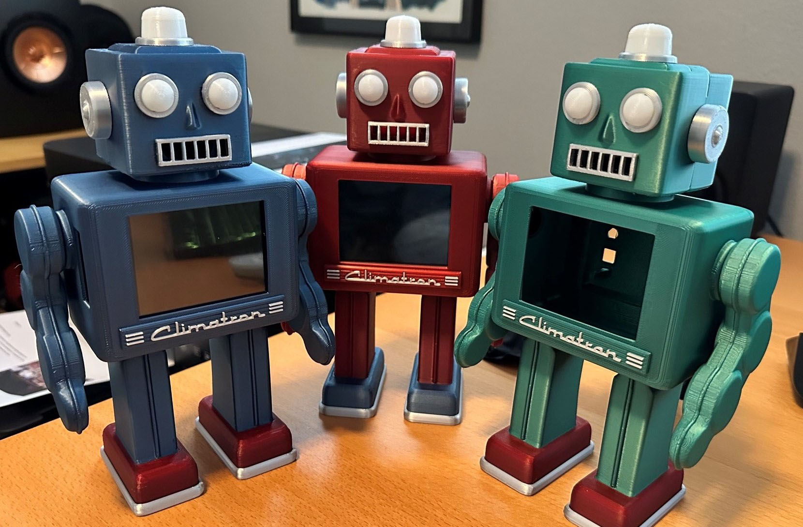

Welcome to the home for Climatrons everywhere! We're happy you're interested in the Climatron Project. More information will be available here soon.
See you at Teardown 2026 in Portland, Oregon on July 24-26, 2026!

The Climatron Project is the handiwork of three enthusiastic makers, motivated by a concern for better understanding the environment around us, a special fondness for toy robots, and the enjoyment of working on projects together: